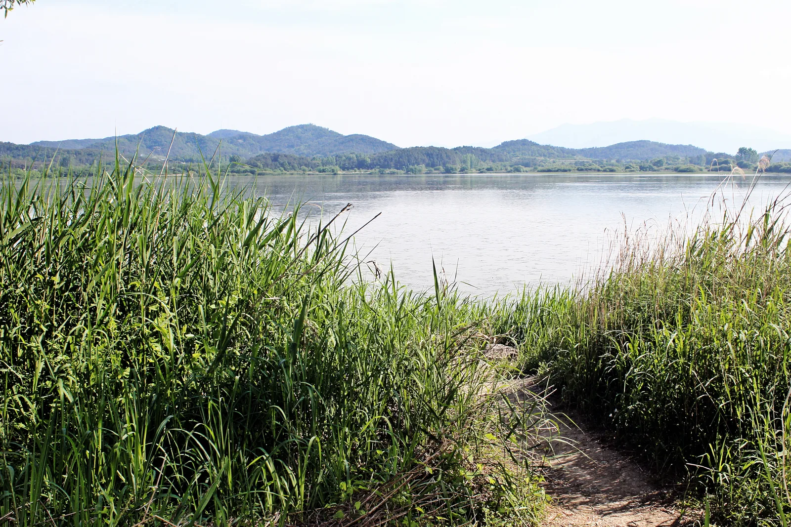
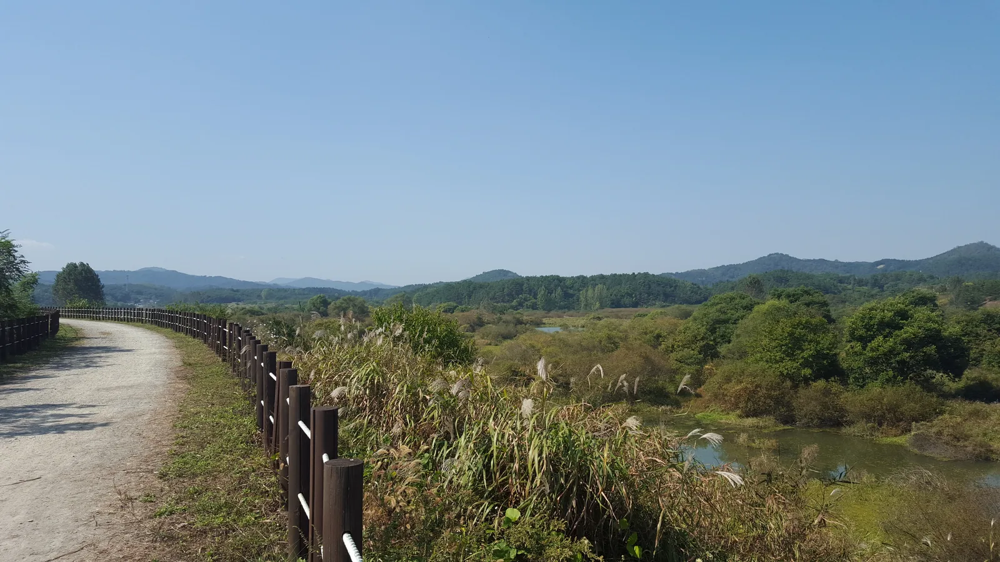
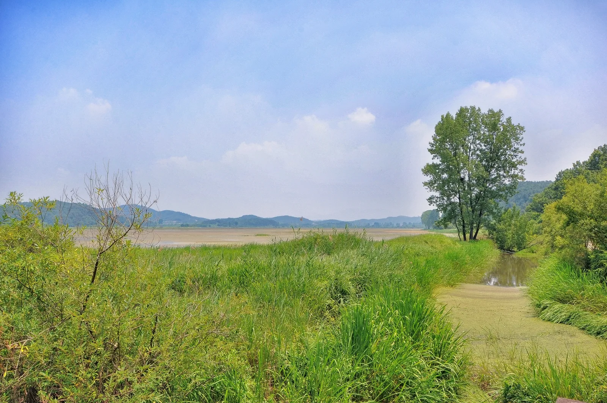
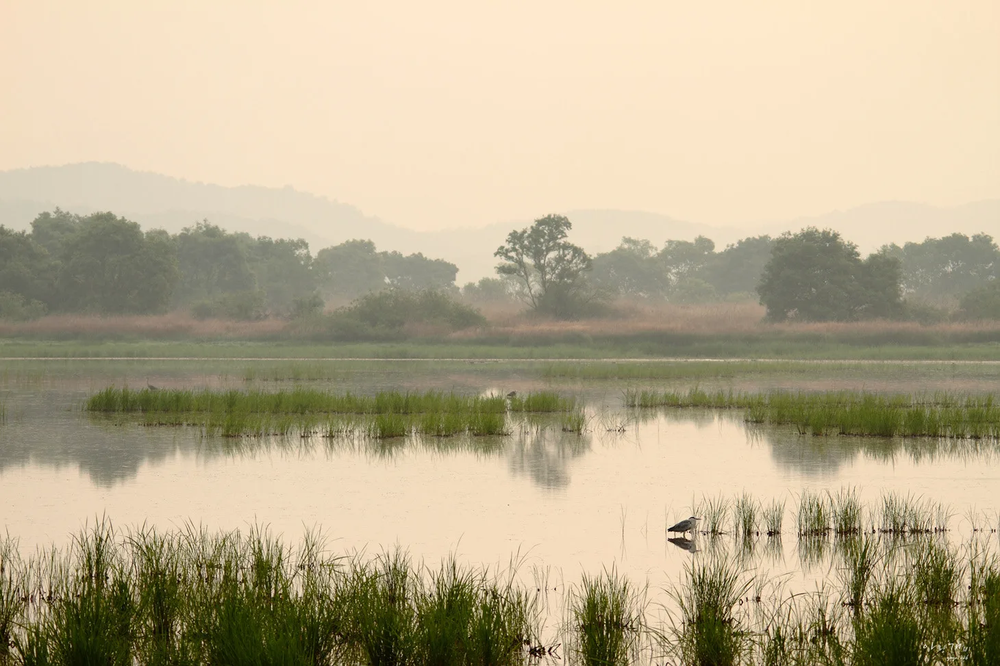
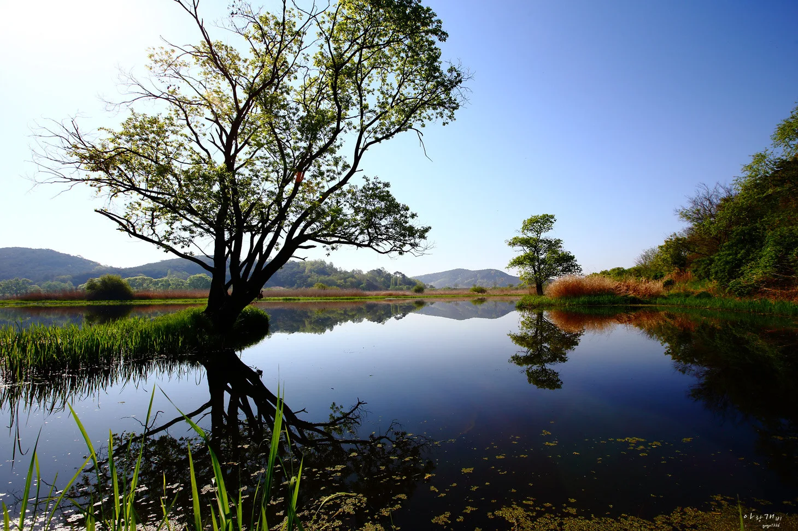
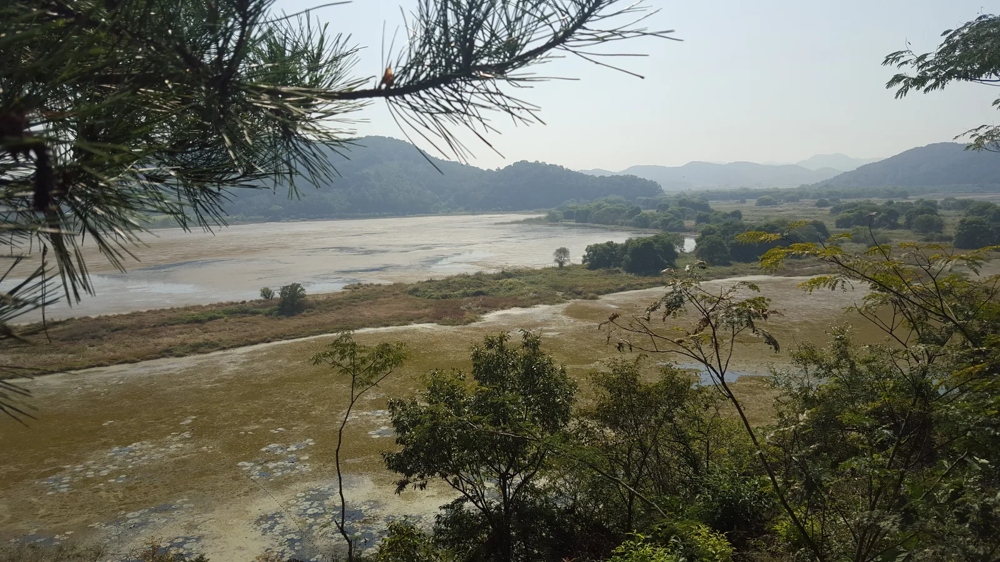

▲ 창녕 유어면·이방면 일대에 펼쳐진 우포늪. 낙동강 배후습지 중 가장 넓은 자연 늪지로 꼽힌다
경남 창녕군 유어면·이방면·대합면·대지면에 걸쳐 있는 우포늪은 국내에 남은 자연 늪지 가운데 가장 넓다. 늪 바닥을 이루는 암반은 중생대 백악기 중기, 약 1억 4000만 년 전에 형성된 것으로 추정되고, 이후 마지막 빙하기를 거치며 낙동강 물이 이 일대로 역류·정체되면서 지금의 늪 형태가 만들어진 것으로 알려져 있다. 담수면적만 250만㎡(약 75만 평)에 달하고, 습지보호지역 전체 면적은 그 세 배가 넘는 854만㎡(약 258만 평)에 이른다. 문제는 넓은 만큼 어디서부터 걸어야 할지, 언제 가야 물안개와 철새를 볼 수 있는지 헷갈린다는 점이다. 이 기사는 탐방로 선택부터 자전거 대여, 물안개 명소, 철새 도래 시기까지 방문 전 확인할 순서대로 정리했다.
1. 우포늪은 어떻게 만들어졌나 — 1억 4천만 년의 시간
▲ 우포늪은 낙동강의 배후습지 중 가장 넓은 규모로 꼽힌다 ⓒ Wikimedia Commons
우포늪이라는 이름은 사실 하나의 늪이 아니라 우포·목포·사지포·쪽지벌 네 개의 습지를 아우르는 명칭이다. 늪 바닥의 지질학적 기반은 백악기 중기, 약 1억 4000만 년 전에 형성됐지만, 실제로 물이 고여 늪이 된 것은 신생대 마지막 빙하기 무렵으로 추정된다. 홍수가 나면 낙동강 물이 우포 방향으로 역류하고, 평상시에도 배수가 원활하지 않은 지형이 겹치면서 이 일대가 상시 습지로 굳어졌다는 설명이다. 1998년 람사르협약에 등록된 습지로, 국내에서 손꼽히는 내륙습지 보호구역이기도 하다.
2. 탐방로 5가지 — 30분 산책부터 늪 한 바퀴 9.7km까지

▲ 우포늪 탐방로. 목책을 따라 걷다 보면 늪과 야산이 번갈아 시야에 들어온다 ⓒ Wikimedia Commons
우포늪생태관을 기점으로 숲탐방로1길을 따라 제1전망대까지 다녀오는 1km(약 30분) 코스가 가장 짧다. 시간 여유가 있다면 늪 전체를 한 바퀴 도는 9.7km(약 3시간 30분) 코스까지 총 5개 탐방로 중에서 골라 걸을 수 있다. 흙길과 데크길이 섞여 있어 평지 산책 수준의 난이도이며, 유모차나 어르신 동반 방문에도 무리가 없는 구간이 많다.

▲ 갈대숲 사이로 난 오솔길을 따라가면 잔잔한 늪 수면과 마주하게 된다 ⓒ Wikimedia Commons
| 구간 | 거리 | 소요시간 | 비고 |
|---|---|---|---|
| 생태관→제1전망대 | 약 1km | 약 30분 | 가장 짧은 입문 코스 |
| 중간 순환 코스 | 약 3~5km | 약 1~2시간 | 전망대·숲길 경유 |
| 늪 전체 순환 | 약 9.7km | 약 3시간 30분 | 우포·목포·사지포·쪽지벌 전체 조망 |
정확한 개별 코스명과 최신 통제 구간은 방문 전 창녕군청 문화관광 홈페이지나 우포늪생태관에 확인하는 편이 안전하다.
창녕군청 우포늪생명길 페이지에서 확인 가능3. 자전거로 둘러보기 — 대여료와 출발 지점
걷기에는 다소 넓다면 자전거 대여가 대안이다. 우포늪 자전거 여행은 생태관 입구에서 출발하며, 대여료는 2시간 기준 1인용 3000원, 2인용 4000원 수준으로 알려져 있다. 늪 둘레를 따라 난 자전거길을 이용하면 도보로 3시간 넘게 걸리는 구간도 한결 짧은 시간에 둘러볼 수 있어, 가족 단위나 시간이 빠듯한 방문객에게 특히 유용하다.
4. 물안개 명소 — 새벽 방문이 핵심인 이유

▲ 이른 아침 물안개가 걷히기 전 우포늪. 새벽 시간대는 사진 애호가들 사이에서 특히 인기가 높다 ⓒ Wikimedia Commons
우포늪이 '물안개 명소'로 불리는 이유는 늪 특유의 지형 때문이다. 낮과 밤의 기온 차가 큰 가을·겨울철 새벽, 상대적으로 따뜻한 늪 수면과 차가운 공기가 만나면서 수면 위로 옅은 안개가 피어오른다. 해가 뜨기 시작하면 이 물안개가 서서히 걷히면서 역광 속 갈대와 새들의 실루엣이 드러나는데, 이 짧은 시간대를 노리고 새벽에 찾는 방문객이 많다. 물안개는 대기 상태에 따라 매일 다르게 나타나므로, 여러 날 방문이 어렵다면 일교차가 큰 맑은 날 새벽을 노리는 편이 확률을 높이는 방법이다.

▲ 바람이 잦아드는 이른 시간, 늪 수면이 거울처럼 나무 그림자를 비춘다 ⓒ Wikimedia Commons
5. 철새 도래 시기 — 계절마다 달라지는 관찰 포인트

▲ 전망대에서 내려다본 우포늪. 계절에 따라 이곳을 찾는 새의 종류가 달라진다 ⓒ Wikimedia Commons
우포늪에서 새를 가장 많이 볼 수 있는 계절은 겨울이다. 북쪽의 혹독한 추위를 피해 남하한 겨울철새들이 10월 무렵부터 우포늪을 찾기 시작해 겨울 내내 머문다. 봄에는 번식을 준비하는 따오기가 관찰 포인트로 꼽히고, 여름에는 따뜻한 기후와 풍부한 먹이를 찾아 남쪽에서 올라온 여름철새들이 자리를 잡는다. 계절마다 관찰되는 새의 구성이 달라지는 만큼, 목적에 맞춰 방문 시기를 정하는 것이 좋다.
✅ 방문 전 체크리스트
· 겨울철새 관찰은 10월 이후, 물안개는 일교차 큰 맑은 날 새벽이 유리
· 자전거 대여는 생태관 입구에서, 2시간 1인용 3000원·2인용 4000원 수준(변동 가능)
· 정확한 코스별 통제 여부는 방문 전 창녕군청 문화관광 홈페이지 확인 권장
6. 입장료·주차·운영시간
우포늪생태관은 2021년 11월 25일부터 관람료를 받지 않아 입장이 무료다. 주차 역시 무료로 이용할 수 있다. 관람시간은 오전 9시부터 오후 6시까지이며, 주소는 경남 창녕군 유어면 우포늪길 220이다. 생태관에서는 우포늪의 조류·어류·식물 등을 소개하는 전시와 함께 에코누리 체험 프로그램도 무료로 운영한다.
| 항목 | 내용 |
|---|---|
| 입장료 | 무료(2021.11.25~) |
| 주차 | 무료 |
| 관람시간 | 09:00~18:00 |
| 위치 | 경남 창녕군 유어면 우포늪길 220 |
| 자전거 대여 | 2시간 기준 1인용 3000원·2인용 4000원(생태관 입구) |
✅ 창녕 우포늪, 가기 전 체크리스트
· 담수면적 250만㎡, 습지보호지역 854만㎡의 국내 최대 자연 늪지, 1998년 람사르협약 등록
· 탐방로는 30분 코스부터 늪 전체 순환 9.7km·3시간 30분 코스까지 5가지
· 자전거 대여는 생태관 입구, 2시간 기준 1인용 3000원·2인용 4000원
· 물안개는 일교차 큰 맑은 날 새벽에, 철새는 10월 이후 겨울철새부터 도래
· 우포늪생태관 입장·주차 모두 무료, 관람시간 09:00~18:00
· 정확한 최신 정보는 방문 전 창녕군청 문화관광 홈페이지로 확인 권장